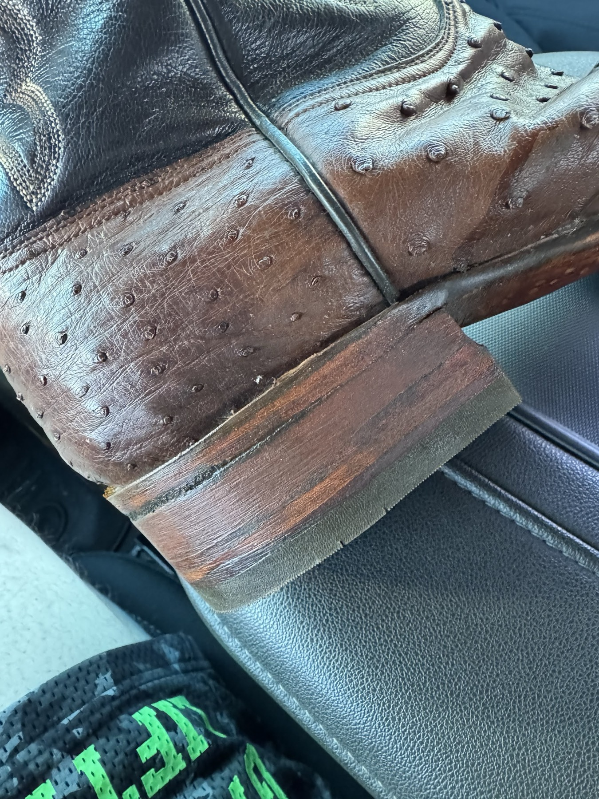
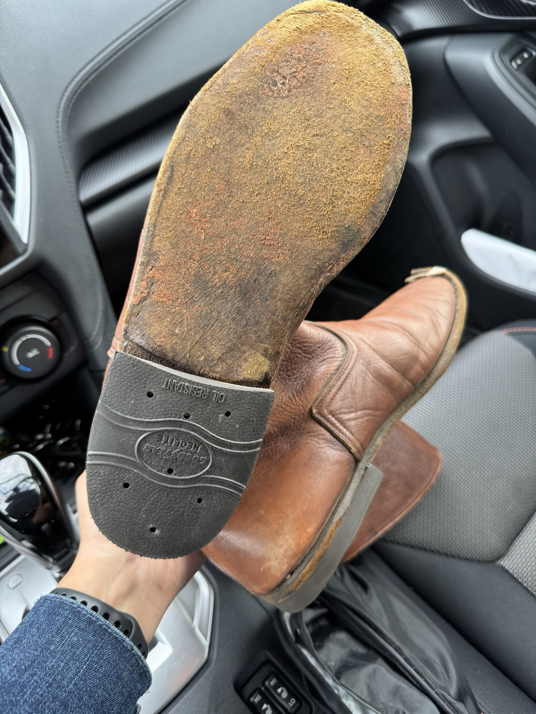
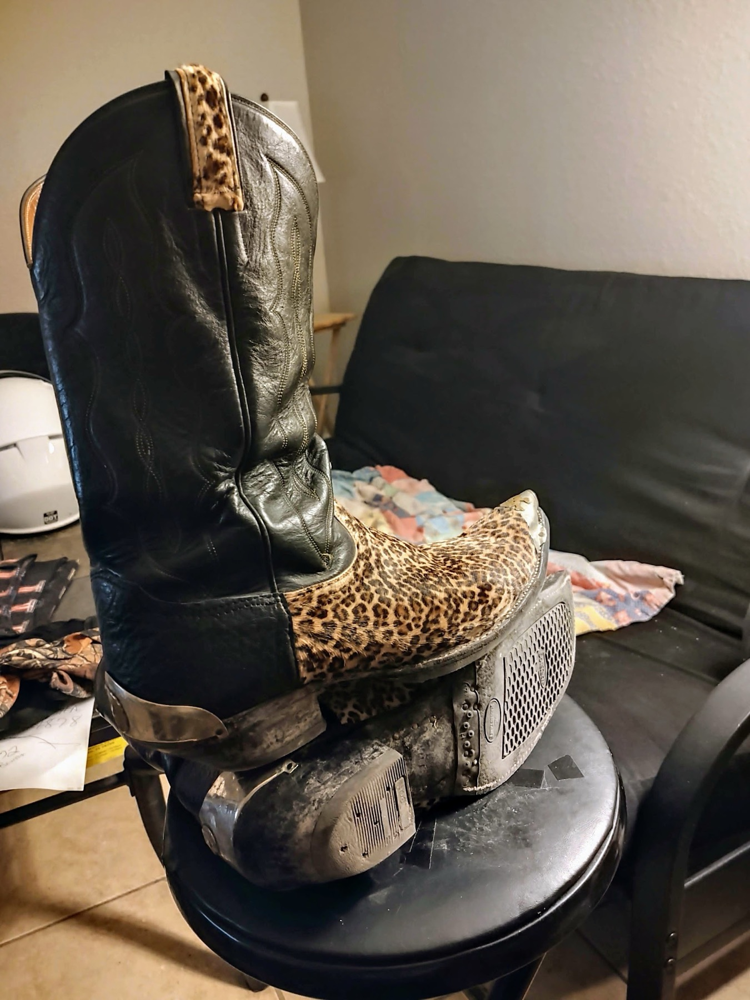
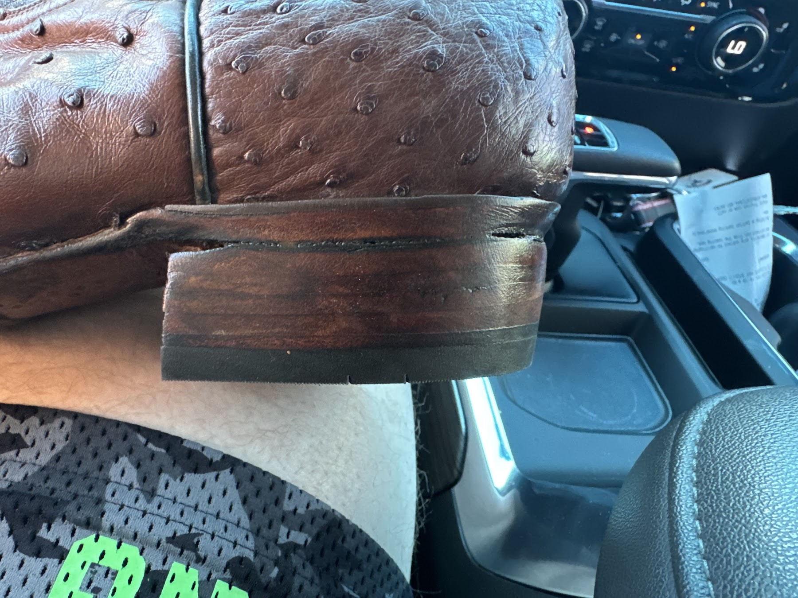
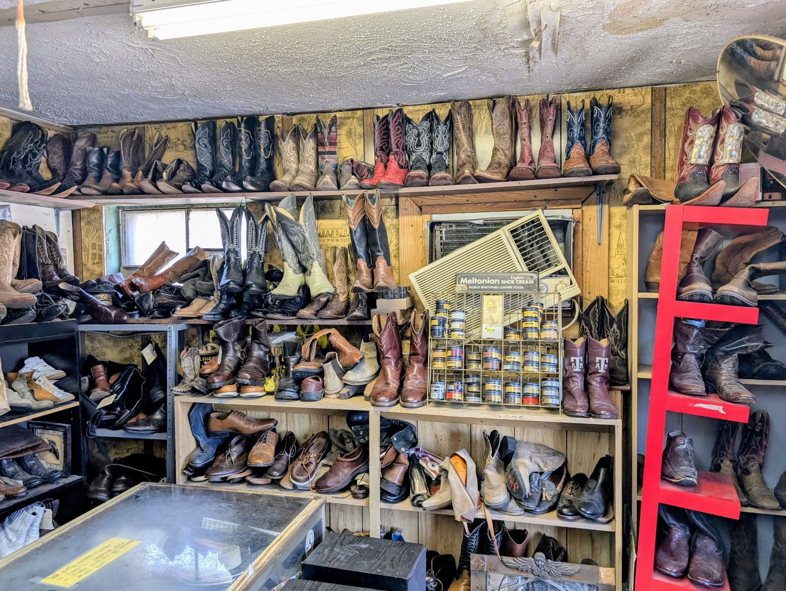

Heels, soles, straps and boots
A small, old-school repair shop on South 1st. Bring in the boots you can't stand to replace, worn-down heels, tired soles, an exotic pair that needs care, or a bag that needs a strap, and we'll tell you straight what it needs.

Boot heels
Worn-down or broken heels rebuilt and replaced on cowboy and western boots, exotics included.

Soles & resoles
Half soles and full resoles so a favorite pair gets another run instead of the trash.

Shoe repair
Everyday shoes, dress shoes and heels brought back into good shape.

Exotic boot care
Ostrich and other exotic-skin boots handled with care, from heel work to a fresh shine.

Luggage & bag straps
Bands that slip over suitcase handles, extra shoulder straps for a rolling laptop case: creative, custom fixes.

Used boots for sale
A whole wall of used cowboy boots and shoes. Reviewers walk out with two pairs at a time.